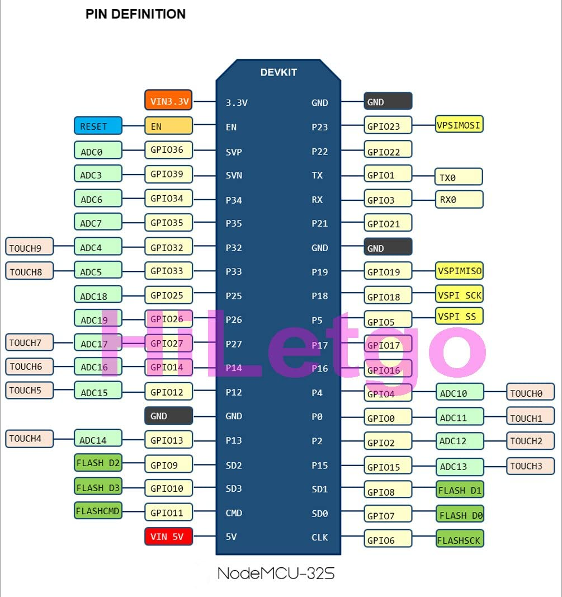
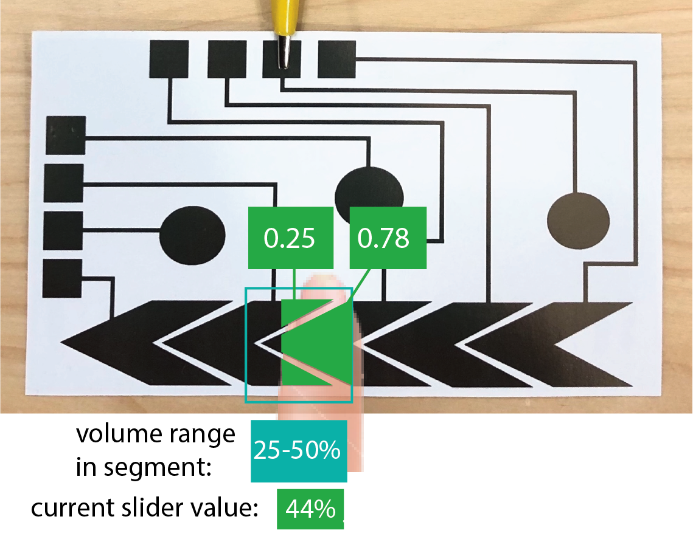
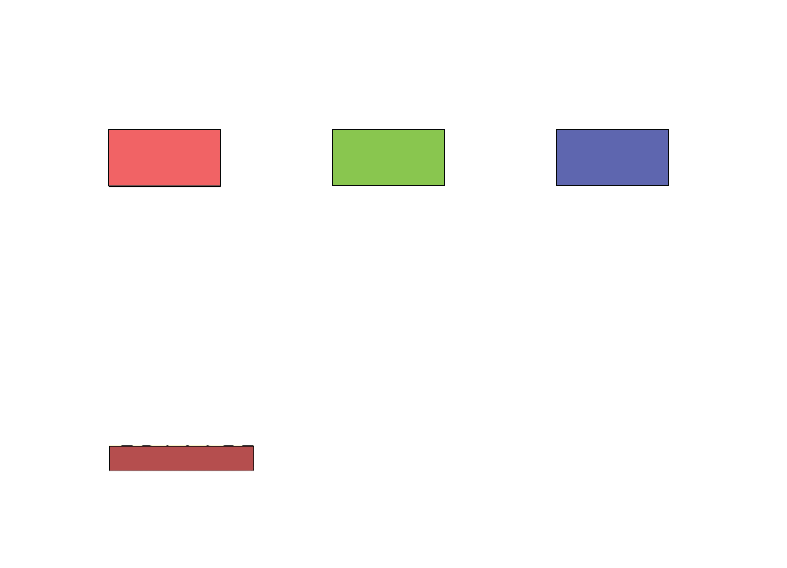
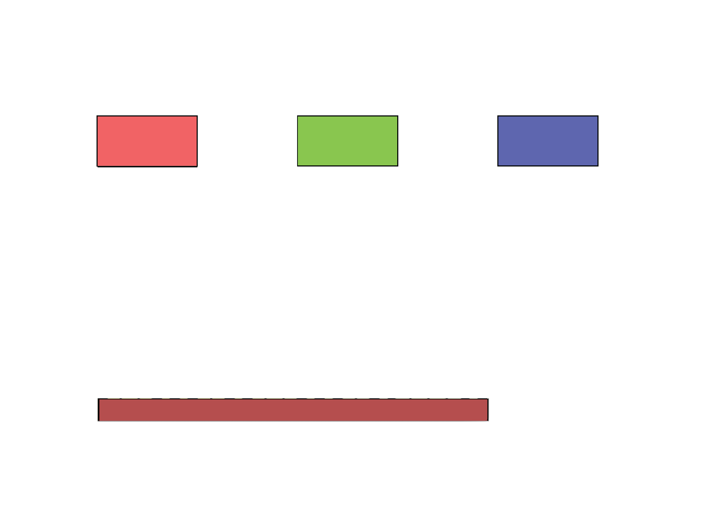

6.810 Engineering Interactive Technologies (fall 2021)
Lab 4: Sensing Input from a Touch Slider
In this lab, you will extend your circuit, signal processing, and the Processing visualization to include the touch slider for control the volume of the music that is being played.


Steps:
- Build the Slider Circuit
Deliverables
At the end of the lab, upload to your student google drive:
- the updated Arduino code you wrote for Serial Communication of the slider touch values (.ino file format)
- the Processing code (.pde) you wrote for Serial communication that displays the slider bar
- the Processing code (.pde) of the music card application with the slider
- a short video (.mov or .mp4, max. 1 minute) showing how you use the slider to adjust the volume
(1) Build the Slider Circuit
One Sender Pin, Different Receiver Pins: Start by wiring up each slider segment exactly the way how you wired up the touch buttons. Remember they can all use the same sender pin but need a different receiver pin. Refer to Lab 2 if you don't remember how this works.
Use 'TOUCH' Pins: Remember, use the pins with "TOUCHX" labels for better signal quality but do not use the one pin labeled as pin0 (TOUCH1) as receiver (you can still use it as sender). Below is the ESP pin out again for your reference.

(2) Extend Microcontroller Code to Read Slider Segments
Read Slider Segment Signal Values: Once finished with the wiring, extend your Arduino code to also read each slider segment's raw touch signal.
Plot each Signal Value to the Serial Plotter: Next, serial print the received raw touch signals for each slider segment and look at them in the Serial plotter. do we have to format the serial print statement in a specific way to get the serial plotter to work?
Below you can see the serial plotter output for individually touching each of the five slider segments.

(3) Determine Finger Overlap with Slider Segments
For the touch buttons, we were merely interested if the button is touched or not, thus we converted the touch signal into a binary value 0 or 1. For the slider, each slider segment should return a continuous value from 0.0 to 1.0 depending on the area the finger overlaps with the slider segment. This will allow us to more smoothly adjust the music volume rather than jumping from one discrete volume level to the next. We can see by 'how much' a slider segment is touched by looking at the raw touch signals coming from the microcontroller. When looking at the Serial Plotter, you will notice that the raw value has a strong correlation with how much space of the slider segment is touched, i.e. the larger the area the higher the value is.


Let's start by computing the continues value for one slider segment.
Determine Min Value when Slider Segment is Touched only a little: First, we want to determine what is noise (i.e. small signal readings when nothing is actually touched) and want to discard those values. To find the minimum value when you should consider a touch signal, we recommend looking at the Serial plotter and investigating the values when no touch occurs and when the finger barely touches a slider segment. Choose a value close to the 'barely touch' value.
Determine Max Value when Slider Segment is Fully Touched: Next, determine the max value when the slider segment is fully touched with you finger, i.e. your finger overlaps with the entire slider segment.
Compare Current Signal Value against Max Value to Determine Percentage of Overlap: Next, check how the current touch signal value related to the maximum value to compute the percentage of overlap, i.e. the value beteen 0.0 and 1.0.
Extend Code to all Slider Segments: Next, extend the code to compute the individual percentage for each slider segment. You can assume that for each of your slider segments you can use the same thresholds since all of your slider segments have the same size, and while each has a slightly different wire length this should be negligible. If your slider segments have vastly different values (e.g., because of some damage to the silver), you need to create separate thresholds for each segment. You can check this by plotting each silder segments' raw values.
(4) Computing the Overall Slider Value
Once you have the continous signal (0.0 - 1.0) for each slider segment, you can compute the overall slider value.
The task here is to convert the five seperate slider segment values (all from 0.00-1.00) and combine them into one value that represents the overall slider position ranging from 0.00-1.00 (0-100 percent).

For this, we will use some simple linear interpolation.
We can also assume that at any given time, there will be at most 2 adjunct slider segments being touched (i.e. the user will only use one finger on the slider at any given time and the one finger will touch at max two adjacent slider segments since we made each segment roughly the size of the finger).
Assigning Slider Portions to Percentage Values
Since we have 5 slider segments in our example, one could say that each slider segment is representing 20% (0.2) of the overall music volume.
Thus, when we know slider segment 2 is touched, it must be a music volume between 20-40%.
To figure out the exact value between 20-40%, we can then look at the slider segments value.
However, because we have overlapping slider segments, looking at each segment individually actually doesn't help us very much to compute one global continous value.
Instead, we need to consider two adjacent segments since they will almost always be touched together.
To be able to consider adjacent segments, we therefore split the slider into 4 segments that overlap with each other as shown below. Each overlapping segment thus represents 25% of the overall volume.
If we only touch the first or only touch the last segment, we assume we are at 0% or 100%.
Global Slider Value When Two Slider Segments are Touched
Consider what happens as we slide from left to right from slider segment 2 towards slider segment 3.
First, the slider value of segment 2 will get higher as more and more area of our finger overlaps with the slider segment.
Then, as we move towards the slider segment 3, the value of slider segment 2 decreases again as more and more of our finger leaves the slider segment 2 and instead overlaps with the slider segment 3.
Thus, once we know that the finger touches the slider segment 3, a lower sensor value of segment 2 actually means a higher slider value and not a lower one!
To compensate for this, if we detect that segment 3 is touched, we subtract the segment 2 slider value from 1.0.
e.g. segment2 = 0.25 && segment3 is touched then segment2 = 1.0-0.25 (results in 0.75).
For slider segment 3, we can simply read the regular value and use it.
Next, we still have to map the two slider values to an overall slider value.
For this, we first compute the mean of both values ((0.75+0.78)/2 = 0.765) and then map the resulting number onto the value range of the slider volume area (i.e in our example the area we are looking at is from 25%-50% since this covers both slider segment 2 and 3). Since the slider volume slider area is 25-50% and we are at 76.5% between these values, the final slider value is 25%+((50-25)*0.765) = 44.125% as the final slider value.

(5) Write Slider Value to Serial Port
Write the overall slider value to the Serial port so that you can read it later from Processing. For the calculated slider value, format the output like we did before for the touch button so that:
(sensor ID),(slider_value);
(sensor ID) is 3, and represents the ID of the slider (we already used up sensor IDs 0, 1, 2 for the touch buttons).
(slider_value) is ranging from 0.00 to 1.00 to indicate the overall slider position (music volume).
A sample output hould look like:
3,0.78;
3,0.86;
3,0.97;
The output should print continuously as long as the slider is touched.
Create Slider Visualization
Now that the slider values are printing to the Serial port, we can read them from Processing.
Open your Processing program that had the three touch bars and add a horizontal bar for the slider.
The bar represents the entire slider. Thus, if the finger is on the left side of slider, the bar should be short and if the finger slides more to the right side of the slider, the bar should be long.


Add Slider onto the Card
Now that you know the slider values can be visualized in Processing, let's add it to the music card to control the music volume.
Open the music card code again.
We already implemented a class 'Slider' for you.
You can make a new slider with:
mySliders.add(new Slider(start_x, start_y, end_x, end_y));
Please add one slider to the code, just like how you added the button.
Add code to the draw() function to display the slider when it is not in "hide" mode.
Your result should look like this.
You should be able to control the slider by dragging your mouse (with left mouse button pressed):
Dragging the mouse on the slider from left to right:

Create Slider Events for the Music Volume Control
To create events on mouse drag, we need to implement several mouseDragged() events.
We already did some parts of it for you in the code further down in the class.
Please go ahead and extend the code so that it changes the music volume based on the slider level.
You might find the following functions from the "Audio" and "Slider" classes useful:
music.changeVolume(double intensity);
Slider.getIntensity();
Once you finished your code, test if the music volume actually changes by first playing a song with the virtual touch button and then dragging the slider to adjust the music volume. If everything works, move on.
Hide the Slider
Similar to the previously added buttons, you can hide the Slider by pressing the 'h' key on your keyboard while your program runs.
If you want to see them again, press 's' (for show).
Now Let's Change Music Volume from the Inkjet Printed Physical Card
Now that we can control the slider digitally, we also want to adjust the volume of the music from the physical card.
Copy over your code that reads the slider value for the Serial Port from the other Processing application you just wrote and integrate it into the music card.


Now test if everything works by using your physical printed card to play/pause songs and the physical slider to adjust the music volume. If it works, congrats, you are done :)!
Deliverables
At the end of the lab, upload to your student google drive:
- the updated Arduino code you wrote for Serial Communication of the slider touch values (.ino file format)
- the Processing code (.pde) you wrote for Serial communication that displays the slider bar
- the Processing code (.pde) of the music card application with the slider
- a short video (.mov or .mp4, max. 1 minute) showing how you use the slider to adjust the volume